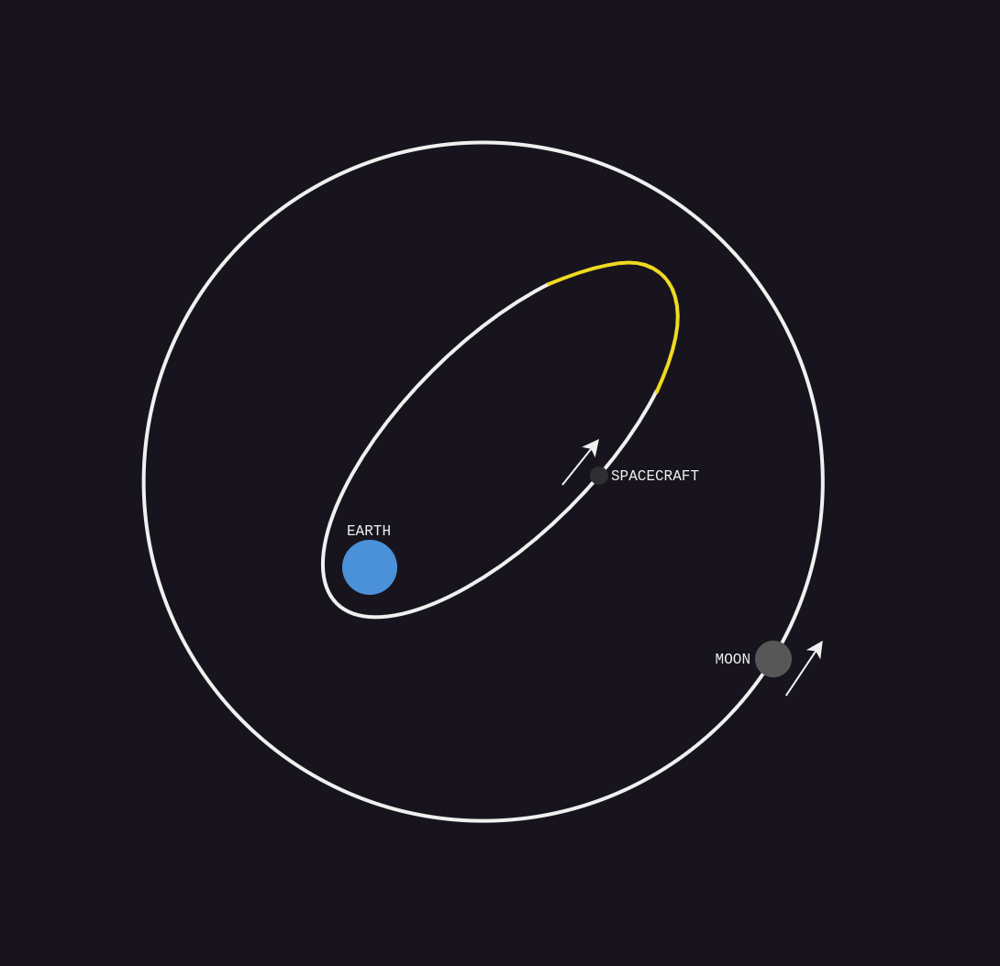
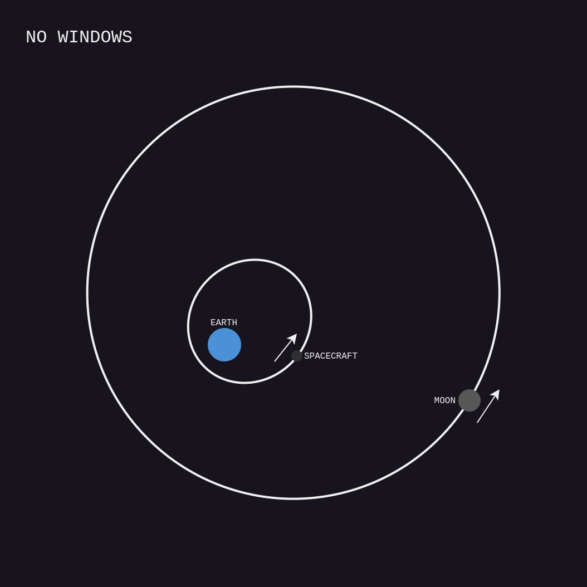
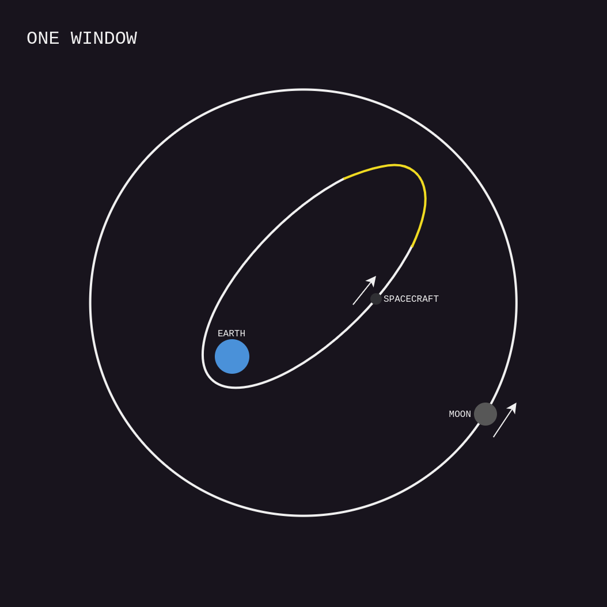
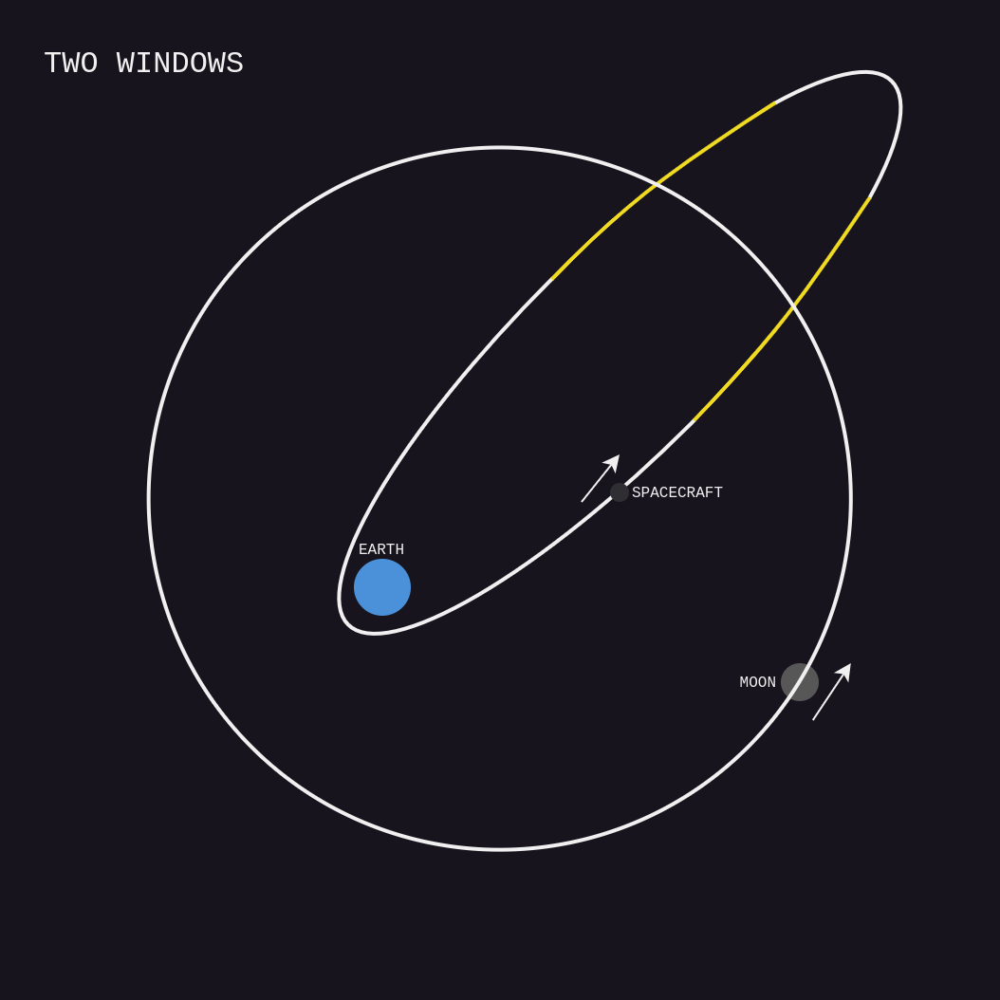
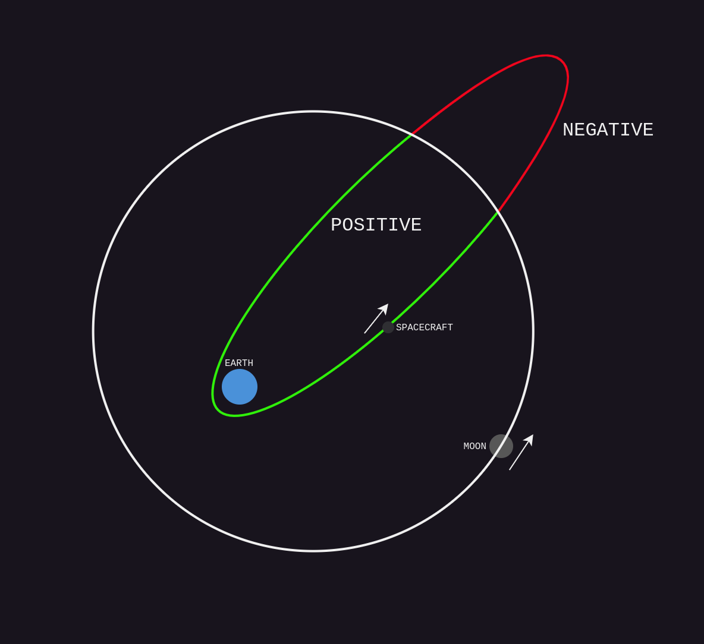
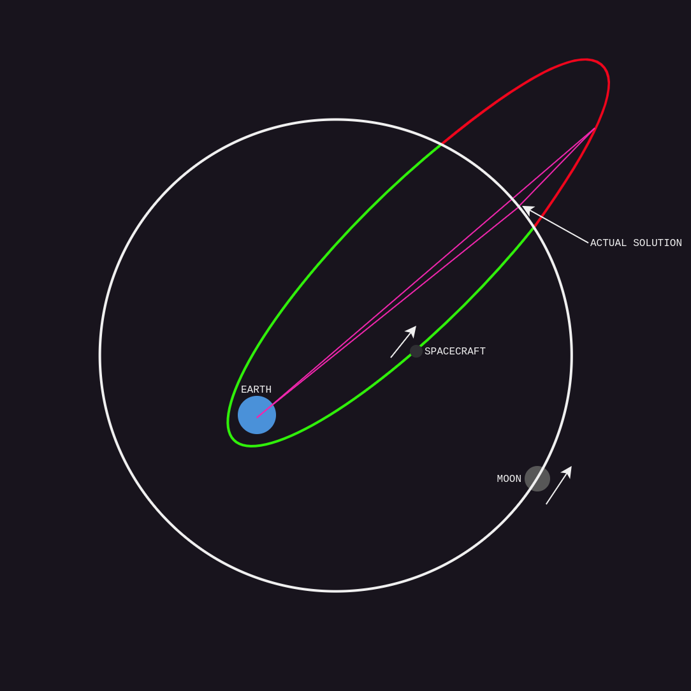

Finding patched conic encounters
Abstract
I'm currently working on a project that involves simulating orbital mechanics in real-time using patched conics. For example, we might want to simulate the Sun, Earth, Moon, and a spacecraft. The user of this simulation should be able to adjust the spacecraft's trajectory by creating a 'burn' (or 'manoeuvre node' if you're familiar with KSP). Ideally, they should be able to see adjustments in real-time; think clicking and dragging a button and watching how the spacecraft's trajectory changes. However, it turns out that computing the trajectory in real-time (specifically, finding encounters) is a far harder problem than I first imagined. This article will explain how I solved this problem. To my knowledge, this is a completely novel method.
Introduction
N-body simulations
When trying to simulate a system of objects (like the Sun, Earth, Moon, and a spacecraft), we could choose to do something like the following:
- Calculate the acceleration due to gravity of each object due to every other object. For example, the sum of the forces from the Earth, Moon, and Sun, on the spacecraft.
- Add the acceleration to velocity.
- Add the velocity to position.
- Repeat as many times as desired.
Note: obviously we could also use a time step here, but I've omitted it for simplicity's sake
The problem here is twofold:
- N-body simulation is really computationally expensive, and has time complexity O(n^2) with respect to the number of objects in the system.
- N-body orbital mechanics are counterintuitive and strange. This is why (among other reasons) games like Kerbal Space Program don't use N-body simulation; the learning curve is just too steep to appeal to a popular audience.
Patched conics
So, we can use an alternative, simplified model of orbital motion called patched conics. First, we'll structure our objects in a tree. For example:
Now, we only consider the gravitational pull of the object's parent. For instance, in this example the Moon is simulated as only being acted on by the Earth (and not the sun). This simplifies all the problems to one-body problems, and something amazing happens: The resulting orbits can all be modelled by conics. Not only does this make orbital mechanics far more intuitive, it also means we can now solve for position and velocity at an arbitrary point more easily. That makes patched conics a lot more performant than an N-body solution. Not only that, patched conics are significantly more amenable to multithreading.
This comes with a few caveats:
- The patched conic method is NOT ACCURATE AT ALL and will diverge quite quickly from N-body solutions. It's still a useful tool for modelling orbital mechanics, but should not be considered complete or accurate.
- We still need to solve a transcendental equation to get position and/or velocity at an arbitrary time. This is because we need to solve Kepler's equation, which allows us to find the angle of an object on its conic at a given time. From the angle, it's relatively trivial to obtain position and velocity.
- Patched conics are actually far more complicated to do the calculations for than N-body solutions. There are a lot more values to be calculated, and sometimes the math can get tedious.
Switching parents
So far, we have stated that the objects are organised in a tree. However, objects need to be able to move around in this tree - what if the spacecraft has a parent of Earth, but gets really close to the moon? We should switch the parent to be the moon. The easiest way to determine when exactly this switch should occur is using a 'sphere of influence.' The idea here is that we can approximate the distance where the gravitational pull of the moon becomes larger than the pull of the Earth. When the spacecraft comes within this distance of the moon, we switch the parent of the spacecraft to be the moon. We'll call this switch an 'encounter.' There are two types of encounters:
- Entrance encounters, like the spacecraft entering the moon's sphere of influence and switching its parent to the moon
- Exit encounters, like the spacecraft exiting the moon's sphere of influence and switching its parent to Earth
So... how do we find encounters? We could just brute force the problem like this:
- Compute the position of the given object (object A) at the current time.
- Check the positions of all other objects with the same parent at that time. If the given object is closer to the other object (object B) than object B's SOI, an entrance encounter occurs.
- If the position is greater than object A's parent's SOI, an exit encounter occurs.
- Increment time.
Simple enough, right? Granted, there are some subtle problems and edge cases that come up when implementing this so it's not quite as simple as I've portrayed, but they can be solved with some debugging.
The real problem is that the performance of this is absolutely abysmal. We can't raise the time step too far, or we'll miss encounters, so we have to proceed with a relatively low time step (2 minutes or so). That means predicting even just 1 year ahead requires 365*12*24*60*60 / 2*60 = ~3 million iterations. This wouldn't be so bad if we didn't have to *solve a transcendental equation involving trigonemtric functions* every single iteration. Given our goal is to display adjustments to the trajectory in real time, this simply isn't going to work (especially if we want our application to run on older devices).
One potential solution to this is variable time steps. Some orbits won't require such small time steps. We could try and come up with a way to vary our time steps in such a way that we're making reasonable performance gains but not missing any encounters. So, why not do this? Well, it's something I strongly considered exploring (and still may do in future) but there's a problem: It's unclear how the time step size can be calculated reliably. How do we know that our time step is small enough so as not to miss any encounters?
Surely to do that accurately for a given situation. we would need to already know quite a lot of information about the encounter already. I've thought of some approaches such as taking a constant and dividing it by the lowest period of the two orbits, maybe multiplying by the distance of the entities, or the derivative of the distance. But actually constructing a good heuristic would require a lot of experimentation. Ideally, I'd need to verify such a heuristic on a large number of different situations to be confident it worked properly, and I don't have access to a good dataset of these situations (nor can I be bothered to create one myself).
So... what now?
Bounding the problem
The concept
While thinking about this, one day I had an idea. Could we potentially narrow down the bounds within which an encounter can occur, and only search for encounters in that bound? For example:
In this example, the yellow section of the orbit is the section where an encounter could happen. On the white section, the spacecraft will never be close enough to the moon for an encounter to occur, so we can just ignore that section when searching for encounters. This already reduces the problem space a lot - the exact amount depends on the situation, but in many situations (such as doing a transfer from Earth to Mars), the reduction is potentially orders of magnitude.
However...
Getting this bound is nowhere near as easy as it looks. Effectively, we are solving the problem of finding the two points where the minimum distance between the ellipses is equal to object B's sphere of influence. In fact, the problem is more complicated than that, because there does not have to be just one bound. There can be either 0, 1, or 2 bounds (and technically we are not considering a hyperbolic case - but we'll come back to that later)


Determining the case
Naturally, we're going to have to solve each of these cases independently. Finding the start and end points of a window is (to my knowledge) not possible analytically, so we will need to find these points numerically. Most likely, this will involve using an algorithm or approximation to find an estimate for the position of the points, then refining it using Newton-Raphson.
So how do we find out which case we're dealing with?
Well, first let's consider a signed distance function (SDF). This function represents the closest distance from a point on object A's orbit to object B's orbit, except it's signed. This means that it's negative on one 'side' of the orbit, and positive on the other side. The input to this function is the angle of object A on its orbit.
This gives us a simple way to determine which case we're looking at. We can evaluate the minimum of the SDF, and make a decision as follows:
- If the minimum of the SDF is positive and greater than the sphere of influence, there are 0 windows
- If the minimum of the SDF is negative and the magnitude of the minimum of the SDF is greater than the sphere of influence, there are 2 windows
- Otherwise, there is 1 window
How can we construct such a function? We divide and conquer again. First, we need to find the closest distance, and second, we need to find the sign of that distance. What both of these have in common is the closest point on object B's orbit to our chosen point on object A's orbit. If we have those two points, we can solve both problems:
- We can simply find the distance between the two points to get the closest distance
- To find the sign, we can subtract the magnitude of object A's point from object B's point, then take the sign of the result
So how do we find this closest point? Well, we can easily get a function for distance between the point and a given theta on object B's ellipse. The closest distance lies at the minimum of this function. We'll obviously need to solve for this minimum numerically. We can just use Newton-Raphson for this, but what about the starting estimate? As luck would have it, we already have a very good starting estimate: the theta for the first object. In fact, in many cases this is visually indistinguishable from the real solution:
The final piece of the puzzle here is finding the minimum of the SDF. Here, we can exploit a key property of the SDF: it is periodic and has exactly one minimum and once maximum.
With that, we have a complete method to find which case we're dealing with. Let's summarise the steps:
-
Construct a function F that finds the closest point on object B's orbit to a given angle of object A's orbit
- Use the given angle as a starting point
- Use Newton-Raphson to converge on a more accurate solution
-
Construct an SDF that takes in an angle of object A's orbit and does the following
- Finds the corrsponding point P1 on object A's orbit
- Find the closest point P2 using F
- Find the sign by finding the distance of P2 and subtracting P1, then taking the sign of the result
- Find the magnitude by computing the distance between the two points
- Return the sign applied to the magnitude
- Construct a function SDF' (the derivative of the SDF)
- Using